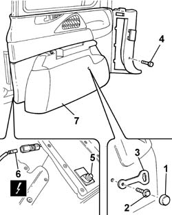

7040B13 LOAD COMPARTMENT/LOAD PLATFORM RIGHT SIDE TRIM - R R
- Path
- Procedures > 70 FITTINGS > 7040 BODY INTERIOR FITTINGS AND TRIM > 7040B LUGGAGE COMPARTMENT AND LOAD PLATFORM TRIMS > 7040B13 LOAD COMPARTMENT/LOAD PLATFORM RIGHT SIDE TRIM - R R
- Kind
- repair procedure (removal / refitting; the operation number is the code)
- Applies to
- all engines; all production periods
- Interactive page
- https://sloeber94.github.io/elrnDB-fUlss/en/#/179007805
Applies to: all engines; all production periods
 Removing
Removing
 Refitting
RefittingOp. 5530B56 BATTERY DRIP TRAY COVER - R.R.
- Disconnect the negative battery terminal.
Op. 7040H42 REAR PILLAR TRIM - R R
Op. 7040B22 LUGGAGE COMPARTMENT/LOAD PLATFORM MOULDING - R+R
Op. 7040H56 REAR SIDE PANEL FLAP (ONE) - R.R.
Op. 7040G30 BOOT LIGHT BULB HOLDER - R R
Op. 5010C08 VENT IN LUGGAGE COMPARTMENT/LOAD CARRYING PLATFORM SIDE TRIM - R.R.
1. Remove the cover.
2. Undo the retaining bolt.
3. Remove the seat belt mounting bracket.
4. Undo the retaining bolt.
5. Release the fixing button using the special tool.
 | Description | Code | Function |
|---|---|---|---|
. | Knife | 1.878.077.000 | Release the fastening buttons |
- Partly extract the side lining for the luggage compartment/load platform.
- Disconnect the electrical connection.
7. Remove the luggage compartment/load platform side trim.

Applies to: all engines; all production periods
Refitting
Removing- Connect the electrical connection.
- Place the luggage compartment/load platform side trim in position and secure the fastening button.
- Tighten the fixing bolt.
- Position the seat belt mounting bracket and tighten the fixing bolt.
- Position the cover.
Op. 5010C08 VENT IN LUGGAGE COMPARTMENT/LOAD CARRYING PLATFORM SIDE TRIM - R.R.
Op. 7040G30 BOOT LIGHT BULB HOLDER - R R
Op. 7040H56 REAR SIDE PANEL FLAP (ONE) - R.R.
Op. 7040B22 LUGGAGE COMPARTMENT/LOAD PLATFORM MOULDING - R+R
Op. 7040H42 REAR PILLAR TRIM - R R
- Connect the negative battery terminal.
Topics linked from this page (7)
- 5010C08 VENT IN LUGGAGE COMPARTMENT/LOAD CARRYING PLATFORM SIDE TRIM - R.R.
- 5530B56 BATTERY DRIP TRAY COVER - R.R.
- 7040B22 LUGGAGE COMPARTMENT/LOAD PLATFORM MOULDING - R+R
- 7040G30 BOOT LIGHT BULB HOLDER - R R
- 7040H42 REAR PILLAR TRIM - R R
- 7040H50 REAR PANEL - R R
- 7040H56 REAR SIDE PANEL FLAP (ONE) - R.R.
Topics that link to this page (10)
- 5010B47 SIDE AIR DUCT TO REAR SEAT(ONE), LH OR RH - R R
- 5505A76 LEFT OR RIGHT SLIDING SIDE DOOR NODE (DIGITAL NETWORK CONTROL UNIT) - R.R.
- 5580H10 PARKING OBSTACLE DETECTION DEVICE ELECTRONIC CONTROL UNIT - R R
- 5580H12 PARKING OBSTACLE DETECTION DEVICE BUZZER - R R
- 5570T98 REAR SPEAKER - R R
- 7020D67 ROD FOR LEFT OR RIGHT MOTORIZED SLIDING SIDE DOOR OPENING/CLOSING DEVICE - ADJUSTMENT
- 7020N30 GEARED MOTOR FOR OPENING/CLOSING LEFT OR RIGHT (ONE) SLIDING SIDE DOOR - R.R.
- 7040B12 LOAD COMPARTMENT/LOAD PLATFORM LEFT SIDE TRIM - R R
- 7040L18 PASSENGER COMPARTMENT FLOOR REAR CARPET - R R
- 7065B08 REAR SEAT BELT (ONE) WITH PRETENSIONER ON REEL, LEFT OR RIGHT - R.R.